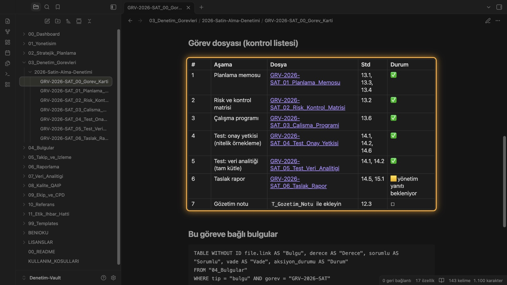
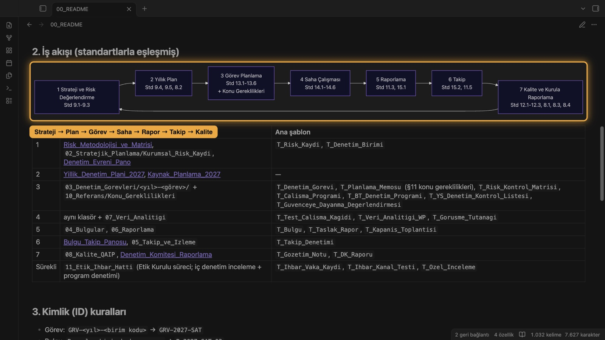
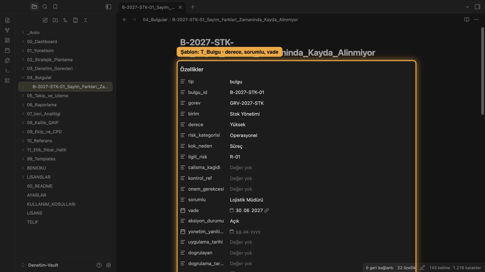
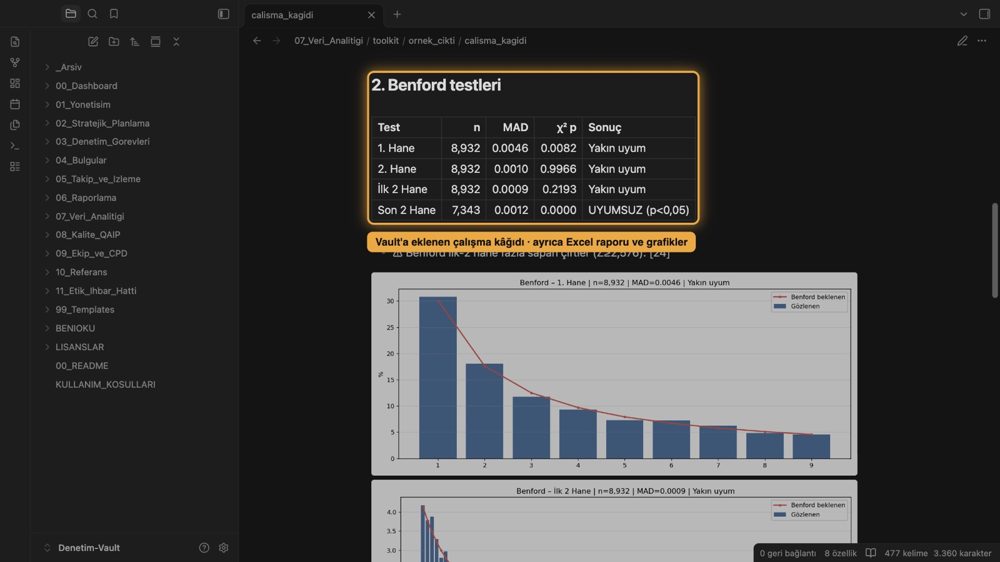

İç denetimin tamamı, tek bir düzenli çalışma ortamında Your whole internal audit practice in one organised workspace
IIA 2024 Küresel İç Denetim Standartlarına (GIAS) göre kurulmuş, kullanıma hazır vault (Türkçe ve İngilizce sürüm): 35 şablon, 28 kontrol kütüphanesi, canlı panolar ve Benford dahil veri analitiği araç seti. Bilgisayarınızda çalışır, verileriniz sizde kalır. A ready-to-use vault, available in English and Turkish editions, built around the IIA 2024 Global Internal Audit Standards (GIAS): 35 templates, 28 control libraries, live dashboards and a data analytics toolkit including Benford tests. It runs on your own computer and your data stays with you.

Denetçiler, denetim yöneticileri ve CIA adayları içinFor auditors, audit leaders and CIA candidates
İç denetçilerInternal auditors
Her görevde aynı yapı: planlama memosu, risk-kontrol matrisi, test kâğıdı, 5C bulgu, rapor ve takip.The same structure on every engagement: planning memo, risk and control matrix, test workpapers, 5C findings, report and follow-up.
CAE'ler ve küçük ekiplerCAEs and small teams
Standart uyum haritası, risk bazlı plan ve kalite programı hazır. GIAS geçişini sıfırdan yazmak yerine uyarlayarak yaparsınız.Standards mapping, risk-based plan and quality programme are ready. You adapt your GIAS transition instead of writing it from scratch.
CIA adaylarıCIA candidates
Standartları uygulamada görürsünüz: her konu bir şablona ve uçtan uca örnek görev dosyasına bağlıdır.See the standards in practice: each topic links to a template and to an end-to-end sample engagement file.
Stratejiden takibe, denetimin her adımıEvery step from strategy to follow-up
- GIAS 2024'ün 52 standardı için uyum haritası ve Kurul / Temel Koşullar kontrol listesi
- Risk metodolojisi, 38 birimlik örnek denetim evreni, 31 risk, yıllık plan ve kapasite hesabı
- 35 şablon: görev kartından denetim komitesi raporuna
- 28 kontrol kütüphanesi: finans, satın alma, BT, KVKK, İSG ve sektörel (imalat, gıda, enerji, inşaat, akaryakıt, restoran…)
- Siber güvenlik ve üçüncü taraf riski için denetim soru listeleri
- Etik ihbar hattı modülü: politika, prosedür, sözleşme taslağı
- Python araç seti: Benford ve 11 analitik test, örnekleme, Excel çıktısı
- Uçtan uca örnek görev dosyası (kurgusal "Örnek Holding A.Ş.")
- Tek tıkla yeni denetim: klasör ve 7 belge kimlikleri dolu; kimlik kontrolü, geçmiş bulgular, denetimi kapatma ve yıl sonu arşivi
- Ana pano, risk, denetim evreni, bulgu takip ve plan gerçekleşme panoları
- Hızlı başlangıç rehberi, SSS; ilk 12 ay yeni sürümler ve e-posta desteği
- Mapping for all 52 GIAS 2024 standards plus a Board / Essential Conditions checklist
- Risk methodology, a 38-unit sample audit universe, 31 risks, annual plan and capacity model
- 35 templates, from engagement card to audit committee report
- 28 control libraries: finance, procurement, IT, data protection, health & safety and sector-specific (manufacturing, food, energy, construction, fuel retail, restaurants…)
- Audit question lists for cybersecurity and third-party risk
- Ethics hotline module: policy, procedure and contract draft
- Python toolkit: Benford and 11 analytic tests, sampling, Excel output
- End-to-end sample engagement file (fictitious "Sample Holdings Group")
- One-click new engagement: folder and 7 workpapers with IDs pre-filled; ID check, prior findings, engagement close-out and year-end archive
- Main, risk, audit universe, findings tracker and plan-vs-actual dashboards
- Quick-start guide, FAQ; new versions and e-mail support for the first 12 months
Ürünün kendisinden görüntülerTaken from the product itself
Görüntüler Türkçe sürümdendir; İngilizce sürüm aynı yapıdadır. Örnek veriler kurgusaldır.Screenshots are from the Turkish edition; the English edition has the same structure and dashboards, with English notes, templates and interface. Sample data is fictitious.



Satın alma sonrası 15 dakikada ilk görevYour first engagement 15 minutes after purchase
- Lisansınızı seçip satın alın. Lisans anahtarınız ve indirme bağlantınız e-postanıza gelir.Choose and buy your licence. Your licence key and download link arrive by e-mail.
- Ücretsiz Obsidian uygulamasını kurun (Windows, macOS, Linux).Install the free Obsidian app (Windows, macOS, Linux).
- İndirdiğiniz klasörü Obsidian'da açın; panolar için gereken eklenti pakette hazırdır. Lisans anahtarınızı ilk kurulumda girip çevrimiçi etkinleştirin.Open the downloaded folder in Obsidian; the plugin the dashboards need is included. Enter your licence key at first setup to activate it online.
- Hızlı Başlangıç rehberini izleyerek ilk görevinizi oluşturun.Follow the Quick Start guide to create your first engagement.
Tek seferlik, süresiz lisans: ilk 12 ay güncelleme ve destek dahilOne-time, perpetual licence: updates and support included for the first 12 months
Bir kez ödersiniz, süresiz kullanırsınız. Lisans anahtarı ilk kurulumda çevrimiçi etkinleştirilir, sonra en fazla 30 günde bir doğrulanır (yalnızca lisans anahtarı, örnek kimliği ve rastgele bir etiket gönderilir; vault adı gönderilmez). İnternet yokluğu veya sunucu arızası panoları kilitlemez. Kilit yalnızca anahtar girilmezse 14 gün sonra veya anahtar iptal edilmişse (iade, ödeme itirazı) devreye girer; notlarınız her zaman okunur kalır.Pay once, use it forever. The licence key is activated online at first setup, then checked at most every 30 days (only the licence key, an instance ID and a random label are sent; the vault name is not). Being offline or a server outage does not lock the dashboards. They lock only if no key is entered after 14 days, or if the key has been revoked (refund, payment dispute); your notes always stay readable.
BireyselIndividual
- Örnek verili tam vaultFull vault with sample data
- En fazla 3 cihazda kullanımUse on up to 3 devices
- İlk 12 ay yeni sürümlerNew versions for the first 12 months
- İlk 12 ay e-posta desteğiE-mail support for the first 12 months
EkipTeam
- Boş (canlı kullanım) + örnekli vaultBlank (live use) + sample vault
- Kurulum ve eğitim notuSetup and training guide
- Kurum içi paylaşımlı depoda kullanımUse on your organisation's shared storage
- En fazla 5 cihazda kullanımUse on up to 5 devices
- İlk 12 ay yeni sürümler ve e-posta desteğiNew versions and e-mail support for the first 12 months
- İsteğe bağlı ekip eğitimi (2 × 3 saat): $1.500Optional team training (2 × 3 hours): $1,500
KurumsalEnterprise
- Ekip paketinin tüm içeriğiEverything in Team
- En fazla 25 cihazda kullanımUse on up to 25 devices
- 2 saat online kurulum oturumu2-hour online setup session
- İlk 12 ay yeni sürümler ve öncelikli destekNew versions and priority support for the first 12 months
- İsteğe bağlı ekip eğitimi (2 × 3 saat): $1.500Optional team training (2 × 3 hours): $1,500
Güncelleme Paketi: ilk yıldan sonra, isteğe bağlıUpdate Pack: after the first year, optional
İlk 12 ayın bitiminden itibaren alınabilir; bir yıl boyunca yeni sürümleri ve desteği kapsar. Otomatik yenilenmez, her yıl kendiniz alırsınız. Almazsanız ürün aynen çalışır, kilitlenmez. Vault, yeni sürüm çıkınca ve güncelleme hakkınızın bitmesine 60 gün kala sizi uyarır.Available once the first 12 months are over; it covers new versions and support for one year. It does not renew automatically: you buy it yourself each year. If you skip it, the product keeps working exactly as it is and does not lock. The vault alerts you when a new version is released and 60 days before your update entitlement ends.
KurumsalEnterprise
Fiyatlar ABD doları (USD) cinsindendir ve vergiler hariçtir; KDV/VAT ödeme sayfasında eklenir. Ödemeler ve faturalama satıcı-of-record olarak Lemon Squeezy tarafından yapılır. Kurumsal alımlarda teklif ve TL fatura için bize yazın. Prices are in US dollars (USD) and exclude taxes; VAT is added at checkout. Payments and invoicing are handled by Lemon Squeezy as merchant of record. For enterprise purchases with a quote and a Turkish invoice, contact us.
Sorular ve cevaplarQuestions and answers
12 ay sonra ne olur?What happens after 12 months?
Ürününüz aynen çalışmaya devam eder, panolar kilitlenmez; lisansınız süresizdir. Yalnızca yeni sürümler ve destek dahil olmaktan çıkar. Bunları sürdürmek isterseniz isteğe bağlı yıllık Güncelleme Paketi alırsınız: Bireysel $59 · Ekip $179 · Kurumsal $499 / yıl. Paket otomatik yenilenmez; her yıl alıp almamaya siz karar verirsiniz.Your product keeps working exactly as it is and the dashboards do not lock; your licence is perpetual. Only new versions and support are no longer included. To keep them, you can buy the optional yearly Update Pack: Individual $59 · Team $179 · Enterprise $499 / year. The pack does not renew automatically; each year you decide whether to buy it.
Verilerim nereye gidiyor?Where does my data go?
Hiçbir yere. Vault bilgisayarınızdaki bir klasördür; biz erişmeyiz ve içeriğinden veri toplamayız. Lisans doğrulamada yalnızca lisans anahtarı, örnek kimliği ve rastgele üretilen bir etiket (vault adı değil) ödeme platformuna gider ve cihazın IP adresi sunucuya teknik olarak ulaşır; haftada en fazla bir kez okunan sürüm dosyası herkese açıktır ve bu istekte lisans anahtarı gönderilmez. Ayrıntılar: Gizlilik.Nowhere. The vault is a folder on your computer; we have no access to it and collect no data from its content. Licence checks send only the licence key, an instance ID and a randomly generated label (not the vault name) to the payment platform, and your device's IP address technically reaches its server; the version file read at most once a week is public and the licence key is not sent with that request. Details: Privacy Policy.
IIA metinleri içeride mi?Does it contain IIA texts?
Hayır. Standartlara numara ve başlıkla atıf yapılır; içerik özgün uygulama materyalidir. Resmî metinler IIA'dan edinilmelidir.No. Standards are referenced by number and title; the content is original practice material. Official texts must be obtained from the IIA.
Sistem gereksinimleri neler?What are the system requirements?
Obsidian masaüstü uygulaması (Windows, macOS veya Linux; ücretsiz). Panolar için gereken Dataview eklentisi pakette hazırdır. Veri analitiği için isteğe bağlı olarak Python 3.10+.The Obsidian desktop app (Windows, macOS or Linux; free). The Dataview plugin used by the dashboards is included. Python 3.10+ is optional, for the analytics toolkit.
İade var mı?Can I get a refund?
Dijital içerikte cayma hakkı, ödemeden önce verdiğiniz açık onayla sona erer; onay alınmamışsa yasal 14 günlük cayma hakkınız sürer. Koşulsuz iade uygulanmaz. Paket açılmazsa veya eksikse yeniden gönderim yapılır; sorun çözülemezse ücret iade edilir. Ayrıntılar: İade Politikası.For digital content, the right of withdrawal ends with the express consent you give before payment; if no such consent was obtained, the statutory 14-day right of withdrawal applies. There is no unconditional refund. If the package is faulty or incomplete we re-send it, and refund you if the problem cannot be fixed. Details: Refund Policy.
Soru, destek ve kurumsal teklifQuestions, support and enterprise quotes
E-posta:E-mail: yasarguvenates@gmail.com
Satıcı:Seller: Yaşar Güven Ateş (YGATES Stratejik Yönetim ve Danışmanlık)
Adres:Address: Akçaalan Mah. No: 3, Serik / Antalya, Türkiye
Hedef yanıt süresi: 3 iş günü.Target response time: 3 business days.